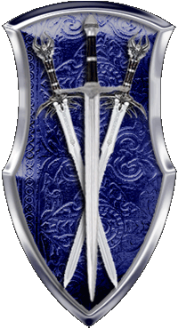

|

|
Das schwarze Brett
|
|
| Übersicht,
Anschläge und Stammtisch (RPG) |
|
Im Morgengrauen.... (1  ) )
|
| Bélanor Zénith (RIP) |
Rannung seid froh, das euch nicht mehr Fisherman´s Friend gehört.
So würde sie Heute wieder fallen.
Sir Tyxaro von Ingham,
Ehemann der reizenden Doireann Zénith,
Versteinerer aus Leidenschaft,
Ausserordentlich fähiger Diener
Zur 4. Stunde am 20.Blumenmond im Jahre 423 |
17.01.06 17:11
|
|
| Frances el Ferror (RIP) |
Oh hättet Ihr mir mal bescheid gegeben ich schulde Middyn Faraldar noch ein Gebäudeabriss und ein zwei der Herren dort suche ich auch noch wegen Diebstahl.
Baronesse Frances el Ferror,
Vorsteherin von Castello el Ferror,
Leibwichtel Wasils
Zur 9. Stunde am 20.Blumenmond im Jahre 423 |
17.01.06 18:23
|
|
| Fiorel Quelleloss (RIP) |
Tyx ... willste dich wieder von deinen Eigenen leuten Tempeln lassen?
Ich weiß überhaupt nicht was du dich aufregst.
Das Plünderer bei nacht und Nebel kommen ist doch immer so. Was mich nur wundert ist, das man darauf stolz sein kann, das man so unfähig ist sich selbst zu ernähren.
Sir Rannug Mc Duck
Zur 11. Stunde am 20.Blumenmond im Jahre 423 |
17.01.06 18:44
|
|
Amrod Aldarion
  |
Hmm komisch, wenn wir im Feindesland eindringen und dort Gebäude ausräumen und schleifen, heißt es die "bösen" Plünderer waren wieder da und wenn die Laochs und Verbündete das selbe tun, werden sie gefeiert ...
Es herrscht Krieg hört also auf rum zuheulen, ihr habt euch für diesen Krieg mit entschieden, also tragt die Konsequenzen ...
Freiherr Amrod Aldarion
Zur 11. Stunde am 20.Blumenmond im Jahre 423 |
17.01.06 18:52
|
|
| Daromir S. Cobar (RIP) |
Seltsam, mir kommt es immer umgekehrt vor. Wenn die Laoch irgendwo operieren ist es sofort ein verbrecherischer Akt um Macht zu gewinnen, wenn Paktierer und ihre Freunde sich zusammenrotten, um feindliche Kämpfer, friedliche Siedler oder Handelspartner zu ruinieren ist es ein Befreiungsschlag gegen den tyrannischen König...
Irgendwo sinnlos, wenn beide Seiten die einzige moralische und politische Wahrheit okkupieren wollen
Daromir Flaischklopfer,
Priester im Dienste des einzig wahren Glaubens an Urvan,
Erster pazifistischer Kampfzwerg der Scherbe
Zur 12. Stunde am 20.Blumenmond im Jahre 423 |
17.01.06 19:05
|
|
Felaria Mendalon
.GIF) |
womöglich heisst es die bösen plünderer weil ihr in einer plünderer nation seid ," Freiherr "Amrod , in der dämonenbeschwören und sklaverei zum tagwerk und mord und brandschatzerei zum lebenszweck .
Gräfin Felaria Mendalon,
Vorsteherin von Winternacht,
Anführerin der glorreichen Nation "Freie Grafschaft Winternacht"
Zur 12. Stunde am 20.Blumenmond im Jahre 423 |
17.01.06 19:08
|
|
| Fiorel Quelleloss (RIP) |
Amrod Aldarion
ihr habt also mit dem Clan Krieg?
ist mir neu
im übrigen ist jeder für mich der jemanden ohne Kriegserklärung überfällt ein ehrloser Plünderer, egal ob laoch oder Wächter und nochmal
Ihr habt heute morgen mindestens einen geplündert der sicher von keiner der beteiligten Nationen eine Ke hat und auch nicht in einer Laochlehenskette ist.
Amrod Aldarion und ja damit seid ihr ein verdammter böser plünderer ... denn ein Angriff ohne KE ist einfach nur eine Plünderung.. oder definiert ihr Warenraub aus Lust und Laune anders?
Nochmal langsam 2 Gebäude (Brauerrei Magierturm)keine Armee keine Wachdienste keine verteidigung keine KEs nich in der Lehenskette ... geplündert.
Das ist ein Fakt. Könnt ihr drehen udn wenden wie ihr wollt. Er bleibt so.
Von daher wäre ich vorsichtig von wegen Rumgeflenne weil is Krieg. Könnte man glatt für eine Lüge halten.
Sir Rannug Mc Duck
Zur 13. Stunde am 20.Blumenmond im Jahre 423 |
17.01.06 19:18
|
|
| Cwlvyn ab Dhwron (RIP) |
welches Opfer wars? Vielleicht war ich es ja der geplündert hat,dies würde mir natürlich sehr leid tun ...
Desweiteren,Felaria du dumme kleine Nuss,Walhallas führen ihren Krieg und sind keine Plünder.
Sir Amorous Meara,
Ehemann der reizenden Amalia Meara
Zur 14. Stunde am 20.Blumenmond im Jahre 423 |
17.01.06 19:28
|
|
Felaria Mendalon
|
selbstverständlich sind sie nichts als plünderer ..,sie waren noch zu keiner zeit etwas anderes ....
Gräfin Felaria Mendalon,
Vorsteherin von Winternacht,
Anführerin der glorreichen Nation "Freie Grafschaft Winternacht"
Zur 14. Stunde am 20.Blumenmond im Jahre 423 |
17.01.06 19:31
|
|
Amrod Aldarion
|
Werte Gräfin Felaria Mendalon
Ich möchte mit Euch jetzt nicht diskutieren was meine Nation war, ist oder sein wird. Ihr habt da einen festgefahrenden Standpunkt, den ihr mir per Taube zukommen lassen habt. Bisher führte ich keinen Krieg gegen Euch, aber wenn es Eurer Wunsch ist, werde ich bei Gelegenheit darauf zurückkommen.
Freiherr Amrod Aldarion
Zur 14. Stunde am 20.Blumenmond im Jahre 423 |
17.01.06 19:34
|
|
| Fiorel Quelleloss (RIP) |
Ich muss zugeben, das ich nicht weiß, wer es gewesen ist, aber es waren mehrere Täter, welche die gebäude Angela Cada von Gondolines heimsuchten.
Von daher nehme ich mir das Recht dieses anzuprangern. Wer den MT und die Brauerei ausgeplündert weiß ich nicht, aber es wurde massenweise Holz und ca. 4000 MT Wareen geraubt, so man mir berichtet.
Ich möchte nochmal darauf hinweisen, das es mehrere Täter waren udn das diese gebäude keinen schutz oder anderen militärischen Zweck hatten, noch das von Seiten der Angreifer in irgend einer Weise ein KE vorlag, soweit mir bekannt ist.
So bewuste Angreifer diese Sache mit der lady Cada klären udn aus der Welt schaffen ist die Sache für mich erledigt, wenn nicht werde ich mir vorbehalten diese Tatsache bei gelegenheit wieder anzuführen.
Tura zum Gruße
Sir Rannug Mc Duck
Zur 19. Stunde am 20.Blumenmond im Jahre 423 |
17.01.06 20:48
|
|
| Daromir S. Cobar (RIP) |
Ach Sir Mc Duck, sicherlich hatte der Standort dieses Turmes etwas mit der Tyrannei des Königs zu tun und deshalb KANN an dieser Plünderung nichts Unrechtes sein, denn dies tuen diese ehrenwerten Kämpfer für das Gute ja nie *ausspuckt*
Daromir Flaischklopfer,
Priester im Dienste des einzig wahren Glaubens an Urvan,
Erster pazifistischer Kampfzwerg der Scherbe
Zur 22. Stunde am 20.Blumenmond im Jahre 423 |
17.01.06 21:19
|
|
Isabella Cortez
 |
Diese Gebäude hatten keinen Schutz werter Sir Mc Duck?
Wie kamen sie dann hinter die Türme der Maethyr en Gelaidh? Sicher rein zufällig oder?
Ihr könnt uns Plünderer nennen solange Ihr wollt und auf Kriegserklärungen pochen, die Ihr sicher auch bekommen könnt wenn Ihr weiter darum bettelt, aber wer sich zu unseren Feinden stellt und sogar bei ihnen siedelt oder für sie sorgt, der muß mit unserem Unmut rechnen.
Wer sich ins Feuer begibt der kann darin verbrennen Mc Duck, so einfach ist das Leben auf dieser Welt.
Isabella Cortez,
Siegerin beim Wettbewerb der 100 Worte,
Verzogene Rotzgöre,
Magisch erzwungene Ehefrau von Fáin Senémis
Zur 22. Stunde am 20.Blumenmond im Jahre 423 |
17.01.06 21:20
|
|
| Daromir S. Cobar (RIP) |
Seht Ihr, Sir Mc Duck, die Gebäude hätten einfach nicht da stehen dürfen. Soll sie sie halt bei Lager West aufbauen, damit sich jeder Plünderer daran bedienen kann oder noch besser in einem Gebiet der ehrenwerten Gesellschaft um diese zu versorgen. Überhaupt sollte jeder Siedler, der ein Gebäude aufbaut wegen Begünstigung von irgendeinem Feind bestraft werden.
Daromir Flaischklopfer,
Priester im Dienste des einzig wahren Glaubens an Urvan,
Erster pazifistischer Kampfzwerg der Scherbe
Zur 22. Stunde am 20.Blumenmond im Jahre 423 |
17.01.06 21:26
|
|
Isabella Cortez
|
Was sollte man von einer Schwinge erwarten als dummes Propagandageschwätz. *lächelt*
Ich bin lieber ein Plünder als das was Ihr darstellt Daromir und ich stehe dazu zu sein was ich bin.
Ihr werdet auch sicher in meinen Worten nichts lesen können das ich mich dagegen wehre als solche bezeichnet zu werden, ich weise Sir Mc Duck nur darauf hin das er selbstverständlich auch eine Kriegserklärung von uns erhalten kann, wenn er darauf besteht.
Isabella Cortez,
Siegerin beim Wettbewerb der 100 Worte,
Verzogene Rotzgöre,
Magisch erzwungene Ehefrau von Fáin Senémis
Zur 23. Stunde am 20.Blumenmond im Jahre 423 |
17.01.06 21:38
|
|
| Sven Glückspils (RIP) |
Und da stach die Mücke, mit Tücke, wieder in eine Lücke.
Sven Glückspils
Zur 2. Stunde am 21.Blumenmond im Jahre 423 |
17.01.06 22:16
|
|
| Fiorel Quelleloss (RIP) |
Isabella Cortez
Euer nationsbruder oben schrieb aber was von Krieg ... und hier wurde etwas von gerecht und so gefahselt ... da ist mir ein ehrlicher Plünderer der das auch zugibt lieber. Damit kann ich leben.
Zum anderen bleibt nur die Frage. Wenn jemand seit langen zeiten irgendwo sitzt und dort sich ein neues heim aufbaut, wer entschädigt diesen dann wenn sich die Verhältnisse ändern. Keiner.
Das Risiko ist da ... dann als Kolateralschaden drauf zu zahlen, aber dann bitte auch nicht irgendwas von gerechtem krieg und solch dingen erzählen, sondern bei dem bleiben was es war. Eine Plünderung durch die Bank weg.
Manche mögen sich damit ihr Leben erhalten, aber ob man darauf stolz sein kann? Bezweifle ich. Nach meinem verständniss gehört dazu eine Leistung die einem einiges abverlangt. Ich denke dies war nicht gegeben.
Sir Rannug Mc Duck
Zur 2. Stunde am 21.Blumenmond im Jahre 423 |
17.01.06 22:25
|
|
| Cron Seregon (RIP) |
Kann besagte Dame nicht selbst reden oder warum müsst ihr für sie so grosse Reden halten Sir Mc Duck?
Cron Seregon,
Priester im Dienste des einzig wahren Glaubens an Urvan
Zur 4. Stunde am 21.Blumenmond im Jahre 423 |
17.01.06 22:53
|
|
Felaria Mendalon
|
nun das ist nunmal so bist du nicht für die machenschaften der bruderschaft so bist du gegen sie .
und da plündern in bruderschaftskreissen anerkanter nebenerwerb ist, wechseln zugehörige personen auch gerne mal in haupterwerbsplünderei .
da wird ein asgarder zum nordischen krieger ,eine wespe zum templer ,der lohier zum pirat ,die nebelwespe zum wächter ,
um dann wenn genug geraubt wurde wieder " anständiger" bürger zu werden.
Sir Rannug meint ihr nicht auch es ist etwas viel erwartet wenn die bruderschaft schon keinen funken ehre hat , dies von ihrem plündererabschaum zu erwarte , der mit sicherheit in ihrem namen plündert und auch ihren schutz geniest .
Gräfin Felaria Mendalon,
Vorsteherin von Winternacht,
Anführerin der glorreichen Nation "Freie Grafschaft Winternacht"
Zur 12. Stunde am 21.Blumenmond im Jahre 423 |
18.01.06 0:37
|
|
| encalion béliar (RIP) |
Hm aber in dem Anschlag gehts doch garnicht um Takehikos Nation oder verwechsel ich da jetzt wieder was? :)
encalion béliar,
Anführer der glorreichen Nation "Volk von Esturia Draconis",
Immer zwei mal mehr Kriegstreiber als Fain,
Ehemann der reizenden Feniá Aducirièl,
Geissel des grauen Volks
Zur 14. Stunde am 21.Blumenmond im Jahre 423 |
18.01.06 1:04
|
|
Ferret
  |
welche lohier sind piraten und was sind eigentlich lohier? dazu vergisst die ach so schlaue Felaria das es keine Bruderschaft mehr gibt. Aber hauptsache es wird geplappert.
Pfalzgraf Ferret,
Vorsteher von Lothianis Bay,
Anführer der glorreichen Nation "Ritter Lothiens",
Ehemann der reizenden Lana von Hexenhain
Zur 18. Stunde am 21.Blumenmond im Jahre 423 |
18.01.06 1:58
|
|
| Theoderich Buchenholz (RIP) |
*schmunzelnd die Wortgefechte verfolgt*
Ich glaube die Oma Mendalon ist noch zu sehr in ihrem elfischen Sprachschatz verhaftet - ich nehme an, sie meinte "Loher" und nicht "lohier", und um genau zu sein PapaLonestar und meine Wenigkeit, welche sich den ehrenwerten Kaperern angeschlossen haben, welche sie leider in fataler Unkenntnis zu Piraten abstempelt.
Aber irgendwann werden wohl auch Elfen alt...
...und senil *zu Ferret flüstert*
Theoderich Buchenholz,
Ehemann der reizenden Valeria
Zur 20. Stunde am 22.Blumenmond im Jahre 423 |
18.01.06 8:11
|
|
| Vincent Aquila (RIP) |
Werte Feindin Felaria Mendalon,
ich verbitte mir diese Unterstellungen. Ihr mögt ja Eure eigene Meinung über viele Dinge haben, die sich nicht mit meiner decken. Aber Eure pauschalen Aussagen möchte ich nicht weiter hinnehmen.
Die Templer sind eine selbstständige Söldnernation und haben nichts mehr mit der Bruderschaft zu tun. Ich weis ja noch nicht einmal ob es die Bruderschaft noch gibt.
Deshalb fordere ich Euch hiermit auf, diese Propaganda im Sinne meiner Kriegsgegner zu unterlassen.
Markgraf Vincent Aquila,
Anführer der glorreichen Nation "Templer",
Ehemann der reizenden Enigma,
Kartograph
Zur 16. Stunde am 23.Blumenmond im Jahre 423 |
18.01.06 12:50
|
|
| Malachias (RIP) |
Jedoch hat Felaria recht , selbst Amöbe war kurze Zeit eine Wespe, und die Asgarder das stimmt auch. Es ist alles jedoch eine weile her, dennoch welchseln dieverse Nationen oder Mitglieder derer kurz die Nation und PLündern fröhlich vor sich hin und werden dann wieder anständig.
Werter Marktgraf Aquila was Felaria sagt empfinde ich nicht als Propaganda sondern als eine Warheit die ich Persönlich auch kenne von einigen Personen, slebst einiger die sich hier gemeldet haben und sich als Unschuldig darstellen.
Zeuss
Zur 20. Stunde am 23.Blumenmond im Jahre 423 |
18.01.06 13:45
|
|
| Cwlvyn ab Dhwron (RIP) |
Aber Zeuss, ist doch egal was ihr empfindet.... ihr seid halt dumm und so tief in Falsters Arsch das ihr nicht genug Luft erhaltet um Nachdenken zu können.
Felaria war schon immer geistig beschränkt, wieso sollte sich das bei der Laotendirne ändern?
Wenn ihr nichts konstruktives sagen wollt dann verschwindet von hier.
Redet mit euren Müttern ... das hilft euch bestimmt ..... Opfer ...
Sir Amorous Meara,
Ehemann der reizenden Amalia Meara
Zur 22. Stunde am 23.Blumenmond im Jahre 423 |
18.01.06 14:11
|
|
| Doc Eku (RIP) |
Was kann ein Götzendiener wie Sir Amorous Meara wohl als konstruktiv empfinden?
Bisher ist er weder durch seine Taten noch durch seine gepflegte Wortwahl sonderlich konstruktiv in Erscheinung getreten. Sein Faible für Begriffe aus dem analen Bereich ist einzigartig hier auf Scherben. Dies untermauert er wiederholt durch den Vorwurf an seine Gegner, sie seien geistig nicht auf seiner Höhe. Hmm?
Vielleicht sollte er mal einige der besten Scherbenheiler kontaktieren. Die könnten ihm über so manche emotionale Unzulänglichkeit hinweghelfen. Das ist nun als konstruktive Kritik zu verstehen, hehe.
Doc Eku,
Kardinal im Dienste des einzig wahren Glaubens an Urvan
Zur 23. Stunde am 23.Blumenmond im Jahre 423 |
18.01.06 14:25
|
|
| Xyron von Ingham (RIP) |
*Applaudiert*
Xyron von Ingham,
Schlächter der Scherbe,
Scharfrichter des Hains
Zur 24. Stunde am 23.Blumenmond im Jahre 423 |
18.01.06 14:34
|
|
| Sangwaiel (RIP) |
Wem applaudierst du denn Xyron?
Dem König, den du vor einigen Monaten noch "heilig" gesprochen hast, oder deinem jetzigen Lehensherren, der wiedermal das einzig Wahre für dich auf Scherben scheint.
An Vincent Aquila kann ich nur sagen, dass die gerechte Strafe noch kommen wird.
Auf die eine oder andere Weise.
Amorous...hmm...du bist einfach nur dumm!
Alles andere ist verlorene Zeit.
Sangwaiel
Zur 2. Stunde am 24.Blumenmond im Jahre 423 |
18.01.06 15:11
|
|
| Cwlvyn ab Dhwron (RIP) |
Nun,Beledigungen schmeißen und Propagande machen,Feinde schlechtreden und eigene Erfolge preisen ist das einzige was ihr könnt, wie oft schon war ich schon daran beteiligt euch zu Schaden.... wie groß euer Hass wohl schon gewachsen ist frage ich mich, das ich als einer eurer größten Feinde euch immer wieder so sehr zusetze und ihr nichts dagegen unternehmen könnt *lächelt gelassen*
Sir Amorous Meara,
Ehemann der reizenden Amalia Meara
Zur 3. Stunde am 24.Blumenmond im Jahre 423 |
18.01.06 15:18
|
|
| Doc Eku (RIP) |
Wer hat hier wen beleidigt? Grande propagande, was? Ein Feind dient ja im Grunde dazu, ihn schlechtzureden. Und eigene Erfolge preisen ist ja nun mehr eure Sache, Herr Meara. Da können wir nicht gegen an.
Wenn ich die Wahl hätte, Amorous das Reden oder das Plündern zu unterbinden, so würde ich ihm den Stift wegnehmen. Das ist nun wirklich schwer zu ertragen.
Doc Eku,
Kardinal im Dienste des einzig wahren Glaubens an Urvan
Zur 5. Stunde am 24.Blumenmond im Jahre 423 |
18.01.06 15:47
|
|
| Kassandra Alfiriel (RIP) |
So wie manche männlichen Gestalten hier sich zum Allerwertesten gewisser Persönlichkeiten hingezogen fühlen könnte man fast meinen sie würden sich zu Männern hingezogen fühlen.
Gibt es denn keine anderen Möglichkeiten gewisse Umstände auszudrücken? Es langweilt mit der Zeit nicht nur die Betroffenen immer nur über die Verlängerung ihres Rückgrads zu reden, vor allem in dieser offensichtlichen Art und Weise, so dass man sich nicht sonderlich gemüßigt fühlt, den Inhalt der Anschläge eines näheren Blicks zu unterziehen.
Kassandra Alfiriel,
Ehefrau des ehrenwerten Cronic Alfiriel
Zur 6. Stunde am 24.Blumenmond im Jahre 423 |
18.01.06 16:11
|
|
Felaria Mendalon
|
selbstverständlich werden unsere worte von unseren feinden einmal mehr als unwahr dargestellt , doch zu ihrem unglück sind wir leider nicht so senil wie sie es gerne hätten.
sehen wir uns einmal diese "freiheitskämfer" an welche die scherbe von der" tyranei "könig falsters befreien wollen.
wenn man sich den plündernden mob so ansieht wird eines schnell klar , nahezu die komplette belegschaft entstammt der bruderschaft oder ihrer vasallen , ob es sie nun heute noch gibt oder nicht .
nachdem 2 versuchte angriffskriege misslangen die macht der laoch zu brechen, versucht man nun auf eine andere art die scherbenherrschaft zu erlangen,und wie schon in früheren tagen ist jedes mittel recht .
so verstärken nun einige nebelwespen die wächter walhalls ,auch falke ,ehemalig gemeinschaft Murindil Lysilia ist dabei .
Sir Amorous Meara war bekannter masen nicht nur einmal mitglied des wespennests .
dann wären da die templer , förderer der scherbenweiten plünderei und schutzpatron fast sämtlicher auf der hafeninsel ansässiger plünderer .. was nicht wenige sind .zugleich selbsternannte söldner welche mit plünderern gemeinsame sache machen oder doch nur auf eigene rechnung arbeiten.
die kaperfahrer-piraten verstärkt durch die gemeinschaft Murindil Lysilia und das Volk von Lothien ,in form von PapaLonestar, Silenôz Filth,Theoderich Buchenholz usw .
warscheinlich werden hator und co bald den clan nordischer krieger reaktivieren , plündern doch auch asgards recht gerne .
begleitet werden diese " freiheitskämpfer " stehts von paktierern und dämonenbeschwören welche den frisch gefangenen sklaven die freiheit durch opferung schenken.
eine düstere zukunft steht uns bevor sollte diese unheilige allianz siegen.., kein heim wäre mehr sicher denn niemand der nicht ihr vassal wäre wäre nicht auch ein potenzielles opfer für die altäre der dämonen .
wer seite an seite mit dämonen kämpft ist nicht besser als der beschwörer selbst .
Gräfin Felaria Mendalon,
Vorsteherin von Winternacht,
Anführerin der glorreichen Nation "Freie Grafschaft Winternacht"
Zur 9. Stunde am 24.Blumenmond im Jahre 423 |
18.01.06 16:40
|
|
| Bélanor Zénith (RIP) |
In den Staub!
Sir Tyxaro von Ingham,
Ehemann der reizenden Doireann Zénith,
Versteinerer aus Leidenschaft,
Ausserordentlich fähiger Diener
Zur 9. Stunde am 24.Blumenmond im Jahre 423 |
18.01.06 16:46
|
|
| Vincent Aquila (RIP) |
Werte Feindin Felaria Mendalon,
niemals werde ich Euch der Senilität beschuldigen. Auch das ist mal wieder eine Beleidigung und Unterstellung unter vielen, die ich mir von Euch anhören muss.
Die Templer waren einmal Teil der Bruderschaft. Aber schon vor langer Zeit haben wir der Bruderschaft den Rücken gekehrt.
Ganz öffentlich habe ich verkündet, dass die Templer eine eigenständige Söldnernation sind. Und wir handeln so wie man es auch in unseren Statuten nachlesen kann.
Allerdings werden wir uns gegen Nationen oder Personen zur Wehr setzen, die uns den Krieg erklären und somit unseren Status nicht anerkennen wollen. Wir werden dies aktiv tun, dann wir sind nur eine kleine Gemeinschaft, die nicht bereit ist darauf zu warten, dass irgendjemand, der uns mal den Krieg erklärt hat, den ersten Schlag versetzt. Alle Nationen, die uns den Krieg erklärt haben, hatten die Gelegenheit Ihre Situation zu überdenken. Leider hat sich bisher niemand besonnen. Und so sind wir gezwungen weiter einen Krieg zu führen, denn wir nicht führen wollen.
Aus meiner Sicht begehen alle diese Nationen einen großen Fehler. Dann einerseits können sie so die Dienste der Templer nicht in Anspruch nehmen und andererseits sind sie Ziel ihrer selbst erwählen Feinde.
Ich bin mir im Klaren darüber, dass Ihr das sicher anders sehen werdet. Aber das kann ja jeder halten wie er möchte.
Ich jedenfalls habe es nicht nötig meine Feinde zu beleidigen.
Markgraf Vincent Aquila,
Anführer der glorreichen Nation "Templer",
Ehemann der reizenden Enigma,
Kartograph
Zur 10. Stunde am 24.Blumenmond im Jahre 423 |
18.01.06 16:59
|
|
| Brendan (RIP) |
Nicht mal, wenn sie so dämlich sind wie Felaria?
Sir Brendan,
Anführer der glorreichen Nation "Bruderschaft der Kaperfahrer"
Zur 10. Stunde am 24.Blumenmond im Jahre 423 |
18.01.06 17:00
|
|
| Ardán Schwarzauge (RIP) |
Ihr solltet mit Eurem Programm auftreten, werter Markgraf Aquila. Den Text habt Ihr jedenfalls schon ausgezeichnet drauf. Ich weiß nur nicht, ob ihn noch jemand hören will. Er war beim ersten Mal schon nicht sonderlich interessant und verliert mit jeder Darbietung von der wenigen Spannung, die er einst hatte.
Graf Ardán Fálmanôr von Nerôná,
Vorsteher von Dîn Nerôná,
Mitglied im Hohen Rat und Großmeister des Ordens,
Witwer der reizenden Lyselle Duval,
Kartograph
Zur 10. Stunde am 24.Blumenmond im Jahre 423 |
18.01.06 17:02
|
|
| Jesta (RIP) |
Es freut mich zu sehen, wie der Plünderernation Laoch mal wieder zugesetzt wurde. Es wurden wieder Schäden in riesigem Umfang verursacht und mal wieder konnten die Laoch nicht mal ansatzweise vergleichbaren Schaden anrichten.
Das Einzige was die Laoten mal wieder schaffen :
Sie reden sich selbst alles schön, obwohl jeder weiss, wie sie innerlich leiden...
Laoten, wie lange haltet ihr noch durch, bis ihr euch auflöst ?
Jesta
Zur 12. Stunde am 24.Blumenmond im Jahre 423 |
18.01.06 17:30
|
|
| Cuchulain (RIP) |
Werte Felaria,
ich habe doch versucht Euch zu erklären, der Krieg ist vorbei. Es gibt keine Bruderschaft mehr. Ihr habt Frieden.
Ihr müsst die traumatischen Kriegserlebnisse, die Euch auch heute noch verfolgen und Eurer Seele und Eurem Verstand soviel Schaden zufügen, endlich hinter Euch lassen.
Versucht im Frieden mit Euch und Euren Nachbarn zu leben. Verbale Attacken helfen Euch wohlmöglich nicht dabei.
Wenn Ihr nicht sicher seid, wie es mit Euch weiter gehen soll, lasst Euch helfen. Der Glaube an Pheron ist zwar nicht der Eurige, wenn Ihr aber weisen Ratschlag benötigt, könnt Ihr Euch trotzdem jederzeit an ein Mitglied des Konvents wenden. Man wird Euch gerne helfen.
Cuchulain,
Prophet im Dienste des einzig wahren Glaubens an Pheron,
Anführer der glorreichen Nation "Konzil der Sieben",
Legionär Pherons,
Kartograph
Zur 13. Stunde am 24.Blumenmond im Jahre 423 |
18.01.06 17:47
|
|
T´An-Mo
|
Oh ja,
die bruderschaft lebt und gedeiht.
überall scharen sich neue mitglieder um die einzelnen generäle auf das sie bald ein neuer anführer gegen die türme des königs führen möge.
groß ist die zahl derer die den tyrannen verabscheuen und seine tod, sowie den seiner speichellecker, wünschen.
nun wo auch die goldene route nicht mehr so ertragreich ist, kehren ihm immer mehr den rücken und hassen ihn dafür das er sie in seine lehnskette presste damit sie auch etwas von dem schnöden mamon erhalten.
aber die tage sind gezählt und der könig wird sterben... so oder so
T´An-Mo |
18.01.06 20:09
|
|
| Celebrimbor (RIP) |
Wenn man keine Ahnung hat - einfach mal still sein. Hier kommen viele Halbweisheiten oder Weisheiten die man über zig Ecken gehört hat zutage.
Baron Celebrimbor de Corazon,
Vorsteher von Asgards Ocarnje,
Verlobter der reizenden Greebo von Lansk
Zur 2. Stunde am 25.Blumenmond im Jahre 423 |
18.01.06 20:46
|
|
| Malachias (RIP) |
Jesta irgendwie gefällt mir euer Gesicht nicht Sonderlich, so kannte ich einen anderen der genauso aussah wie Ihr und ich habe den nicht sonderlich gemocht, nunja was soll man schon Sinnvolles sagen, Wie alt ist die eure Nation , es ist eine sehr junge Nation oder also sollet Ihr wohl am ruhigsten hier sein ;-)
Und waren es nicht eure Vorfahren die damals den könig betrogen haben und eine Passage in den Hain gemacht hatten?!?!
also eigentlich waren eure Vorfahren ja auch Plünderer, somit solltet Ihr euch einfach raushalten ;-)
________
Amöbe
Du bist wie immer charmant^^
_________
Cuchulain
Naja Ihr vergesst einige denken immernoch daran sich zu Rächen, einige andere sind in dieverse Nationen gegangen und hegen dennoch einen groll gegen die Laochs und warten auf Ihren Tag ;-).
Und andere warten wieder das der Krieg anfängt um den ehemaligen Feinden mal zu zeigen wie der Sand schmeckt :-)
Es wird solange Krieg geben solange usnere Generationen weierleben, denn solange wird es den Kreig im Geiste geben, für jeden der älteren Generation
Zeuss
Zur 3. Stunde am 25.Blumenmond im Jahre 423 |
18.01.06 21:01
|
|
| Jesta (RIP) |
Ich spreche nicht für meine Nation, sondern für mich selbst, ich brauche niemanden zum Schutze meiner Meinung vorschieben...
Jesta
Zur 7. Stunde am 25.Blumenmond im Jahre 423 |
18.01.06 22:00
|
|
| Jack Pott (RIP) |
Jesta, brauchst Du wieder Deinen Nationstitel "Schwätzer der Nation" mit dem eventuellen Zusatz "Vogelfrei"?
Das Königreich Laoch d´Orchades ist eine von uns anerkannte Nation denen wir keine Plünderrei unterstellen! Ich bedaure, dass wieder einmal viel Leid und Brandschatzung die Scherbe heimgesucht hat. Jedoch steht das wohl auch in einem direkten Zusammenhang mit öffentlichen Kriegserklärungen, aus denen sich die Freien Lolandrianer raushalten.
Zeuss? Junge Nation? Soso... und unsere Vorfahren waren Plünderer? Etwas geistig umnachtet seit Ihr schon, oder?
Herzog Jack Pott,
Vorsteher von Larjas Waldburg,
Anführer der glorreichen Nation "Freies Lolandria"
Zur 8. Stunde am 25.Blumenmond im Jahre 423 |
18.01.06 22:11
|
|
| Itto Ogami (RIP) |
Ich glaube Zeuss meint Sol Feuerschatten...
Drake,
Kardinal im Dienste des einzig wahren Glaubens an Pheron,
Medicus der Provinz Brilandia
Zur 11. Stunde am 25.Blumenmond im Jahre 423 |
18.01.06 22:49
|
|
| Malachias (RIP) |
mit unter und Jack Pott ich glaube eher Ihr seit etwas daneben, wie Drake sagte Sol meinte ich.
Jack Pott ich glaube nicht das Ihr etwas dazu sagen solltet, denn eure Nation ist leider Gottes eine Plünderernation, auch wenns nur eine Person aus 2 oder 3 damals war er war immerhin euer Vorfahre ;-)
Und das ist mein persönliche Meinung!
Jesta Ihr solltet wirklih einen schönheit chirurgen aufsuchen (es ist keine Beleidingung nur erinnert Ihr mich stark an jemanden)
Zeuss
Zur 13. Stunde am 25.Blumenmond im Jahre 423 |
18.01.06 23:22
|
|
| Jack Pott (RIP) |
Zeuss.. Sol WAR in der Nation Larjas Schattenwächter, aber nicht später IN einer von mir geführten Nation, als er irgendwo einen Betrug begangen hat.
Nur mal so eine Info an einen Wiedergeborenen.
Herzog Jack Pott,
Vorsteher von Larjas Waldburg,
Anführer der glorreichen Nation "Freies Lolandria"
Zur 13. Stunde am 25.Blumenmond im Jahre 423 |
18.01.06 23:25
|
|
| Cwlvyn ab Dhwron (RIP) |
Hey ,sol hab ich bezahlt ;)
das war noch ein netter kerl *fg*
Sir Amorous Meara,
Ehemann der reizenden Amalia Meara
Zur 14. Stunde am 25.Blumenmond im Jahre 423 |
18.01.06 23:38
|
|
| Silenôz Filth (RIP) |
die kaperfahrer-piraten verstärkt durch die gemeinschaft Murindil Lysilia und das Volk von Lothien ,in form von PapaLonestar, Silenôz Filth,Theoderich Buchenholz usw .
schon wieder irrt ihr euch - nie war ich ein mitglied der genannten nationen. euer halbwissen solltet ihr besser für euch behalten!
Sir Silenôz Filth
Zur 18. Stunde am 25.Blumenmond im Jahre 423 |
19.01.06 0:31
|
|
| Itto Ogami (RIP) |
Silenoz war früher mal ne Wespe...
*Geschichtsstunde erteilt*
Drake,
Kardinal im Dienste des einzig wahren Glaubens an Pheron,
Medicus der Provinz Brilandia
Zur 19. Stunde am 25.Blumenmond im Jahre 423 |
19.01.06 0:45
|
|
Ferret
|
Felaria sollte eh bald ihre Zunge in Zaum halten.
Sie verbreitet lustig ihre Halbwahrheiten.
Aber wenn ihr so schlau seid Felaria, dann nennt doch einen ehemaligen Lothier der jetzt Kaperfahrer ist.
Sicher wäre es nichts wofür man sich schämen müsste. die kaperfahrer haben mehr Ehre als viele andere, aber trotzdem sollte Felaria langsam mal ehrlich sein und sich besser informieren.
Pfalzgraf Ferret,
Vorsteher von Lothianis Bay,
Anführer der glorreichen Nation "Ritter Lothiens",
Ehemann der reizenden Lana von Hexenhain
Zur 19. Stunde am 25.Blumenmond im Jahre 423 |
19.01.06 0:46
|
|
| Malachias (RIP) |
Es gibt aber einige Plünderer^^
Ob jetzt oder früher es gibt welce, es müssen ja keine Karperfahrer sein!
Zeuss
Zur 22. Stunde am 25.Blumenmond im Jahre 423 |
19.01.06 1:19
|
|
Arvid Mirdok
 |
Felaria Mendalon, prinzipiell weiß hier jeder was Ihr meint, auch die werten angesprochenen Damen und Herren. Allerdings ist es viel schöner auf Kleinigkeiten herumzuhacken um scheinbar Eure Aussage zu entkräften.
Markgraf Loin Spirit,
Vorsteher von Sala Mandra
Zur 23. Stunde am 25.Blumenmond im Jahre 423 |
19.01.06 1:33
|
|
| Malachias (RIP) |
Ist es nicht wie immer, diese armen Plünderer die wehren sich doh nur egen die Herrschaft des Königs, was kann man da schon nch machen oder dazu sagen ;-)
Zeuss
Zur 6. Stunde am 27.Blumenmond im Jahre 423 |
19.01.06 8:52
|
|
| Cwlvyn ab Dhwron (RIP) |
um es mal nett zu sagen .... halt endlich die Fresse Zeuss,deine Dummheit ist ja nicht mehr zu ertragen. Ich sagte doch das dich bei deiner Mutter ausheulen sollst,also geh.
Du kannst nichts,du bist nichts,also benimm dich wie ein nichts.
Sir Amorous Meara,
Ehemann der reizenden Amalia Meara
Zur 12. Stunde am 27.Blumenmond im Jahre 423 |
19.01.06 10:18
|
|
| Doc Eku (RIP) |
Amorous trägt seine Piratenmütze auch nur, damit ihm der Kopf nicht weiter anschwillt.
Doc Eku,
Kardinal im Dienste des einzig wahren Glaubens an Urvan
Zur 14. Stunde am 27.Blumenmond im Jahre 423 |
19.01.06 10:41
|
|
| encalion béliar (RIP) |
Nein er will bei den Dorf Jungs als Pirat aufgenommen werden!
encalion béliar,
Anführer der glorreichen Nation "Volk von Esturia Draconis",
Immer zwei mal mehr Kriegstreiber als Fain,
Ehemann der reizenden Feniá Aducirièl,
Geissel des grauen Volks
Zur 14. Stunde am 27.Blumenmond im Jahre 423 |
19.01.06 10:42
|
|
| Cwlvyn ab Dhwron (RIP) |
Nee sicha net ;)
Sir Amorous Meara,
Ehemann der reizenden Amalia Meara
Zur 17. Stunde am 27.Blumenmond im Jahre 423 |
19.01.06 11:27
|
|
| encalion béliar (RIP) |
Tanz für mich Amo :D
encalion béliar,
Anführer der glorreichen Nation "Volk von Esturia Draconis",
Immer zwei mal mehr Kriegstreiber als Fain,
Ehemann der reizenden Feniá Aducirièl,
Geissel des grauen Volks
Zur 23. Stunde am 27.Blumenmond im Jahre 423 |
19.01.06 12:53
|
|
| Cwlvyn ab Dhwron (RIP) |
zieh leine depp -.-
Sir Amorous Meara,
Ehemann der reizenden Amalia Meara
Zur 24. Stunde am 28.Blumenmond im Jahre 423 |
19.01.06 18:39
|
|
| encalion béliar (RIP) |
*zieht an der Leine*
Und jetzt tanz Amo, tanz!
encalion béliar,
Anführer der glorreichen Nation "Volk von Esturia Draconis",
Immer zwei mal mehr Kriegstreiber als Fain,
Ehemann der reizenden Feniá Aducirièl,
Geissel des grauen Volks
Zur 24. Stunde am 28.Blumenmond im Jahre 423 |
19.01.06 18:46
|
|
| Noemi Duval (RIP) |
*schüttelt nur lachend den kopf*
nun, hieß es nicht wenn männer noch spielen können, dann sind sie gesund? dann habe ich ja hoffnung amo, dass wir noch lange viel spaß haben werden ...
natürlich möchte ich in den reihen der gratulanten nicht fehlen, sehr schön geplant, wunderbar ausgeführt ...
und an all die schwätzer: wir zerstören produktionsgebäude, wir plündern waren, wir führen kriege ... aber städte, so wie es bei manchen kleinen königen an der wochenordnung ist, haben wir noch nicht eingerannt und ihre einwohner vertrieben oder ausgehungert ... aber es ist interessant zu sehen, dass lediglich die chromler es hier wagen, laute töne zu spucken ...
hat das distelflämmchen keine aufgabe mehr für euch, dass wir uns nun eure ergüsse anhören müssen handlanger des laotenpacks? *grinst*
ach und felaria ... ihr mögt euch ja wahrlich wunderschön finden und auch absolut von euren worten überzeugt sein, aber worte können auch kriege auslösen und ich bin mir sicher, dass ihr es doch nie wagen würdet, euer städtchen in gefahr zu bringen, oder?
Markgräfin Noemi Duval,
Ehefrau des ehrenwerten seth béliar,
Kartograph
Zur 16. Stunde am 29.Blumenmond im Jahre 423 |
19.01.06 22:20
|
|
| Sangwaiel (RIP) |
Darf ich Euch berichtigen Noemi Duval...
Untotenmeute (Muradjanian) überwinden Cherubinia und fressen alle Einwohner!
Sangwaiel
Zur 17. Stunde am 29.Blumenmond im Jahre 423 |
19.01.06 22:45
|
|
| Cwlvyn ab Dhwron (RIP) |
das waren Untote, steht doch da, sind wir Untot? wohl nicht dummer Chromler, wer hat dich aus dem Käfig gelassen ... Fali sollte euch wieder einfangen....
Sir Amorous Meara,
Ehemann der reizenden Amalia Meara
Zur 18. Stunde am 29.Blumenmond im Jahre 423 |
19.01.06 23:00
|
|
| Noemi Duval (RIP) |
*seufzt*
kleine chromlerin, für euer alter finde ich doch, dass ihr euren mund ziemlich weit öffnet ... aber ich nehme an bestimmte dinge tragen da zur übung bei, oder? *grinst*
ich verstehe ja sicher, dass ihr sehr sehr sehr wütend darüber seit, dass ihr ein mitgleid meiner familie bisher nicht aus dem konvent bekommen habt ... sicher, ihr werdet es auch noch schaffen, denn irgendwann denkt man sich natürlich, dass einem die eigenen nerven zu schade sind, sich dieses peinliche trauerspiel anzusehen ...
aber ist dies ein grund uns derartige lügen zu unterstellen? zum ersten finde ich auch, dass wir für untote doch wahrlich zu gut aussehen ... mal davon abgesehen, dass untote bekanntlich nicht reden, geschwiege denn schreiben ...
und zum zweiten weiß ich nicht, wie oft ich es noch betonen kann: mich interessiert euer geblubber über angebliche götter und absieben nicht. wer solche luftgespinste zum überleben braucht bitte, aber laßt mich mit euren schwächen gefälligst zufrieden. ich bin mein eigener herr und glaube nur an mich selbst ... *seufzt* aber selbst das dürfte für euch natürlich schwer verständlich sein ...
noch zur anmerkung: stellt euch vor, ihr sitzt in einem glashaus und habt einen großen berg steine neben euch liegen ... werdet ihr es wagen kleine chromlerin?
Markgräfin Noemi Duval,
Ehefrau des ehrenwerten seth béliar,
Kartograph
Zur 19. Stunde am 29.Blumenmond im Jahre 423 |
19.01.06 23:12
|
|
Felaria Mendalon
|
da wir nun einige male erwähnt wurden möchten wir nun auch stellung beziehen .
Markgraf Vincent Aquila , wir hatten euch nicht persönlich angesprochen ,lediglich euere nation erwähnt .
wenn ihr allerdings schon darauf zu sprechen kommt , ihr vermögt zu verkünden schwören oder was auch immer ,glauben tun wir euch nichts .
Prophet Cuchulain , wir wüssten nur allzugerne wie ihr darauf kommt das frieden ist ,wir haben keinen vertrag unterschrieben, und würden das auch nichtohne weiteres tun da wir die erfahrung gemacht haben das wir die einzige person sind die sich an derlei vertragswerk hält .
Jesta ,kleiner dieb ,aportiert euer diebesgut bei euerem herrchen sonst wird er noch wütend ...
Pfalzgraf Ferret ,womöglich vertragt ihr die wahrheit nicht so gut , abgesehen von unserem kleinen fehler mit Silenôz Filth werdet ihr wohl kaum etwas wiederlkegen können oder ?
Markgräfin Noemi Duval, wir sind durchaus in der lage unser städtchen zu verteidigen ...
Gräfin Felaria Mendalon,
Vorsteherin von Winternacht,
Anführerin der glorreichen Nation "Freie Grafschaft Winternacht"
Zur 20. Stunde am 29.Blumenmond im Jahre 423 |
19.01.06 23:19
|
|
Ferret
|
Sicher kann ich eure Worte wiederlegen, ihr solltet die Lothier nennen die zu den Kaperfahrern gehören, das könnt ihr nicht, weil es keine gibt. Also wiederlegt.
Pfalzgraf Ferret,
Vorsteher von Lothianis Bay,
Anführer der glorreichen Nation "Ritter Lothiens",
Ehemann der reizenden Lana von Hexenhain
Zur 2. Stunde am 30.Blumenmond im Jahre 423 |
20.01.06 0:44
|
|
| Alcrotas Feuerfunken (RIP) |
Ihr könnt ja alle nicht richtig "wiederlegen" !
Alcrotas Feuerfunken
Zur 14. Stunde am 31.Blumenmond im Jahre 423 |
20.01.06 9:14
|
|
| Fenvarien Despirae (RIP) |
namen wären schon eine tolle sache. einfach zu behaupten, die und der würden irgendwo mitmachen, unterstützen und was weiß ich noch alles, das ist dummes schulmädchen-gehabe.
sprecht mal offen und direkt felaria.
Fenvarien Silberpfeil
Zur 24. Stunde am 31.Blumenmond im Jahre 423 |
20.01.06 11:31
|
|
| Vincent Aquila (RIP) |
Ich muss schon sagen Ihr seit tief gesunken Felaria Mendalon. Wollt Ihr mich und die werten Leser wirklich für Dumm verkaufen?
Zitat: da wird ein asgarder zum nordischen krieger ,eine wespe zum templer ,der lohier zum pirat ,die nebelwespe zum wächter, um dann wenn genug geraubt wurde wieder " anständiger" bürger zu werden.
Damit unterstellt Ihr mir und meinen Mitarbeitern, dass wir Plünderer sind. Das betrachte ich als auch als persönliche Beleidigung. Mal ganz davon abgesehen, dass Ihr die ganze Söldnernation beleidigt habe.
Markgraf Vincent Aquila,
Anführer der glorreichen Nation "Templer",
Ehemann der reizenden Enigma,
Kartograph
Zur 24. Stunde am 32.Blumenmond im Jahre 423 |
20.01.06 11:37
|
|
Aahz
  |
Eure ganze Söldnernation ist nichts anderes als ein Plündererhaufen. Sozusagen ein Wolf im Schafspelz.
*lach* ich frage mich wohl wie der Preis dafür wäre, dass Ihr Eure "Politiker" verratet lieber Vincent.
Aahz,
Priester im Dienste des einzig wahren Glaubens an Urvan
Zur 2. Stunde am 32.Blumenmond im Jahre 423 |
20.01.06 12:04
|
|
| Mawitti de Leik (RIP) |
Ich frage mich bei diesen ganzen Anschlägen immer wieder, warum hier verschiedene Überschriften gewählt werden. Meist lesen sich alle ab dem zweiten spätestens ab dem dritten Beitrag so unheimlich gleich, als wären es Kopien.
Sollten diese Anschläge vielleicht nur 1-2 Beiträge zulassen und alle weiteren von einem "Anschlagsputzer" gleich an ein separates Brett fein säuberlich untereinander geheftet werden? Überschrift: "Überflüssiges Gezeter" oder ähnliches. ^^
Lady Mawitti de Leik,
Hohepriesterin im Dienste des einzig wahren Glaubens an Urvan
Zur 8. Stunde am 32.Blumenmond im Jahre 423 |
20.01.06 13:27
|
|
| Cwlvyn ab Dhwron (RIP) |
hmm, gute idee ...
die ersten Beträge sind zur Information, der rest muss ja nicht gelesen werden.
Sir Amorous Meara,
Ehemann der reizenden Amalia Meara
Zur 17. Stunde am 32.Blumenmond im Jahre 423 |
20.01.06 15:35
|
|
| Dior e Feye (RIP) |
*schluchz*
Ich hätte nie gedacht, das ich einmal die gleiche Meinung habe wie Amo. Mein Weltbild ist zusammengebrochen.
*stürzt sich in sein Schwert und verwundet sich schwer*
llewelyn,
Verlobter der reizenden Lysira Sternenlicht
Zur 24. Stunde am 32.Blumenmond im Jahre 423 |
20.01.06 17:02
|
|
| Fáin Cortez (RIP) |
*stubst Llewelyn mit dem Fuß an*
Nichtmal Suizid könnt ihr richtig begehen, wenn ihr nicht so wertlos wärt, würde ich vor euch auf den Boden spucken...
MfG.
Markgraf Fáin Senémis,
Vorsteher von Val ti Amo,
Stellvertretender Nationsführer Ritter Esturiens,
Hüter des Chaos,
Aussenminister der Ritter Esturiens,
Magisch erzwungener Ehemann von Isabella Cortez
Zur 4. Stunde am 34.Blumenmond im Jahre 423 |
20.01.06 23:36
|
|
| Bill Einauge (RIP) |
Oh haste Pechgehabt?
Aprophis
Zur 22. Stunde am 50.Blumenmond im Jahre 423 |
24.01.06 21:25
|
|
Übersicht,
Anschläge und Stammtisch (RPG)
|
|
|
|
.GIF)